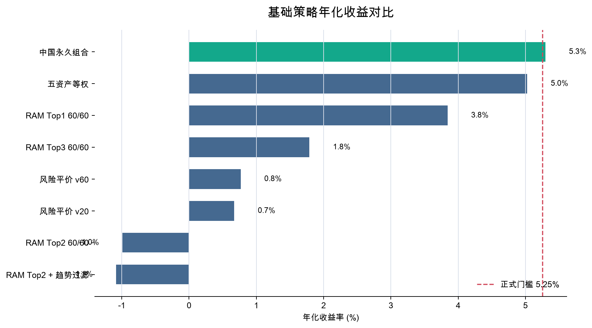
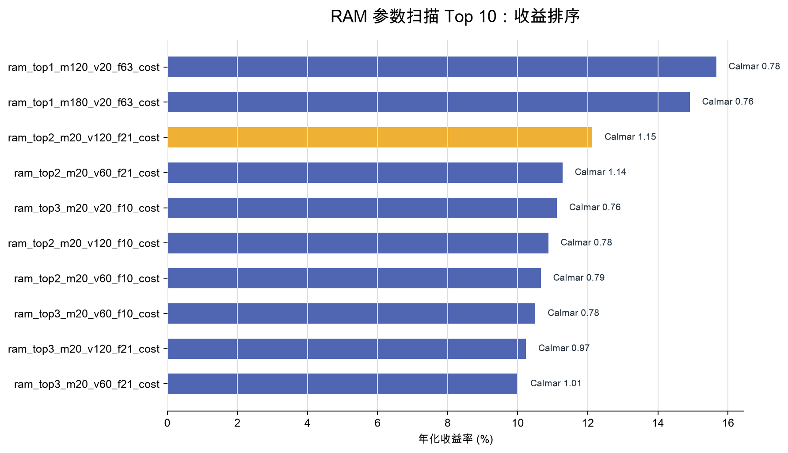
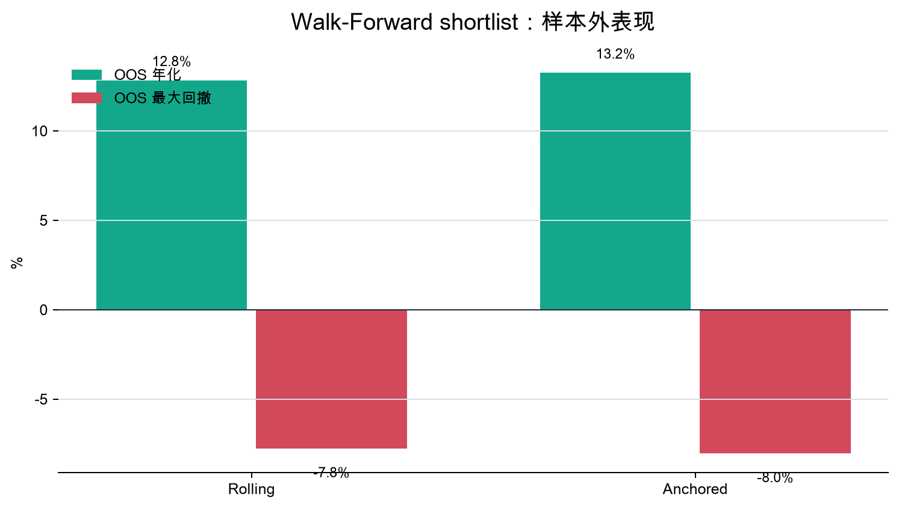
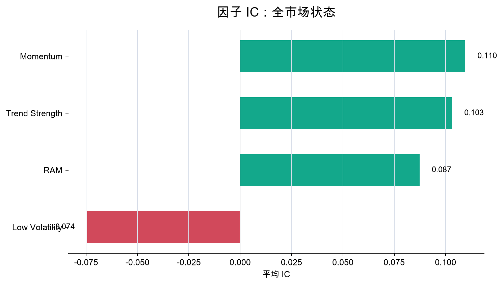

上次：策略研究档案
建立 `strategy_research/`，为 TODO 中的 10 条路线分别创建 `flow.md`，补齐统一评估框架、候选说明和后续 goal。核心产出是“每条策略怎么跑、和什么比、什么条件通过、什么条件淘汰”。
这页汇总上次和本次工作：先把 `my_quant/TODO.md` 拆成可对比的研究档案，再升级为带数据缓存、回测引擎、参数扫描、Walk-Forward、因子 IC 和测试的完整实验管线。
上次解决“研究设计如何落地”，本次解决“如何变成可复跑工程”。
建立 `strategy_research/`，为 TODO 中的 10 条路线分别创建 `flow.md`，补齐统一评估框架、候选说明和后续 goal。核心产出是“每条策略怎么跑、和什么比、什么条件通过、什么条件淘汰”。
把单脚本拆成 `experiment/` 工程模块，加入标准库测试、主入口、兼容入口、重型 Walk-Forward 入口、manifest、shortlist Walk-Forward 和因子 IC 诊断。核心产出是“任何人能在本地复跑同一套结果”。
当前最优研究候选是 ram_top2_m20_v120_f21_cost。它跑赢脚本重算的永久组合，但仍然不是最终稳定策略。
脚本重算永久组合年化为 5.30%，最大回撤 -8.30%。候选策略年化 12.13%，超额年化 6.83%，最大回撤 -10.57%。
训练期最优参数 ram_top2_m180_v20_f10_cost 样本外年化只有 3.38%，最大回撤 -21.42%。这说明单次回测排名不能直接等于最终最优。


这部分回答“是不是只有某个历史区间好看”。结果是：方向有价值，但参数稳定性还要继续验证。


| Walk-Forward 模式 | OOS 年化 | OOS 最大回撤 | OOS 卡玛 |
|---|---|---|---|
| Rolling | 12.82% | -7.77% | 2.65 |
| Anchored | 13.24% | -8.05% | 2.03 |
| 因子 | 平均 IC | IC 胜率 | 观测数 |
|---|---|---|---|
| Momentum | 0.1096 | 55.13% | 1988 |
| RAM | 0.0873 | 53.47% | 1988 |
| 趋势强度 | 0.1031 | 55.18% | 1988 |
| 低波动 | -0.0744 | 37.12% | 1988 |
排序优先看卡玛比，再看年化收益。Top 1 是当前候选，但不是唯一有研究价值的参数。
| 策略 | 年化收益 | 最大回撤 | 卡玛比 |
|---|---|---|---|
ram_top2_m20_v120_f21_cost | 12.13% | -10.57% | 1.15 |
ram_top2_m20_v60_f21_cost | 11.28% | -9.92% | 1.14 |
ram_top3_m20_v60_f21_cost | 10.01% | -9.92% | 1.01 |
ram_top3_m20_v120_f21_cost | 10.24% | -10.57% | 0.97 |
ram_top2_m20_v60_f10_cost | 10.66% | -13.48% | 0.79 |
ram_top2_m20_v120_f10_cost | 10.87% | -13.91% | 0.78 |
这些文件组成了当前策略实验工程。页面数据来自 `results/`，不是手写猜测。
experiment/config.py、data.py、strategies.py、backtest.py、metrics.py、validation.py、factor_diagnostics.py、reports.py、pipeline.py。
.venv/bin/python -m unittest discover my_quant/strategy_research/tests -v.venv/bin/python my_quant/strategy_research/run_full_experiment.py
base_strategy_comparison.csvram_parameter_scan.csvtrain_parameter_scan.csvtrain_best_oos_result.csvwalk_forward_shortlist_summary.csvfactor_ic_summary.csvlatest_summary.mdlatest_summary.jsonexperiment_manifest.jsonram_top2_m20_v120_f21_cost，不是最终可执行投资建议。下一步要把这套工程迁移/复刻到课程 notebook，并继续做全量 Walk-Forward 和更严格的样本外验证。